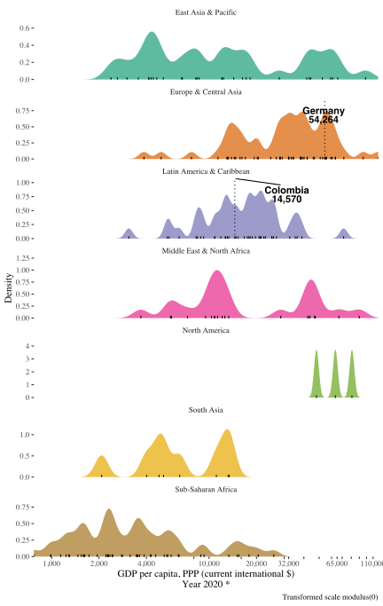

Distribution
A plot to quickly compare highlighted countries, among them, and with the rest of the world using either region or income, to group countries.
plot_dist_wdi("NY.GDP.PCAP.PP.CD", p = 0)
Bar plot
Similar as the distribution plot, quickly shows where the highlighted countries stand in comparison with the rest of the world (without using any country groups). This one is interactive so you can explore a bit (e.g. zooming in and out or see the exact value of the indicator for each country as tooltip).
plot_bar_wdi("NY.GDP.PCAP.PP.CD")Race bar plot
Takes the same approach as the bar plot above, but showing also how it changes over time (powered by gganimate).
plot_race_wdi("NY.GDP.PCAP.PP.CD")
Line plot
Well, a line plot including only data from the highlighted countries. It shows directly the first and last value for each country and labels the series directly (it is an interactive plot as well).
plot_time_wdi("NY.GDP.PCAP.PP.CD")Facetted line plot
Also a line plot as above, but including data for all countries. It is powered by gghighlight to disentangle the spaghetti plot.
plot_time_facets_wdi("NY.GDP.PCAP.PP.CD")
Spaghetti plot
No one should ever see or want to see a spaghetti plot with so many series. Yet, here’s one.
Just have fun playing with it. The interactivity (powered by dygraphs) highlights one series at a time, and sometimes (very rarely, but sometimes), can make such a spaghetti plot useful to identify eye-catching patterns.
plot_spaghetti_wdi("NY.GDP.PCAP.PP.CD")Bubble plot
A quick-to-create bubble plot. Basically a function to produce a scatter plot and you pass the codes for the indicators you want in the x and y axis, as well as the indicator to map the size of the markers to.
Let’s see an example showing public health expenditure vs. risk of catastrophic health expenditure.
Static
There is a static version, powered by ggplot2.
plot_bubble_gg_wdi(
x_indicator = "SH.XPD.GHED.GD.ZS",
y_indicator = "SH.SGR.CRSK.ZS",
size_indicator = "SP.POP.TOTL",
highlight_countries = c("India", "Germany", "Brazil")
)
Interactive
An although you can convert the static bubble plot to an interactive one (e.g. using plotly::ggplotly), those automatic conversions usually leave a few things that could be better. Thus, there is also an interactive version, powered by plotly.
plot_bubble_ly_wdi(
x_indicator = "SH.XPD.GHED.GD.ZS",
y_indicator = "SH.SGR.CRSK.ZS",
size_indicator = "SP.POP.TOTL",
highlight_countries = c("India", "Germany", "Brazil")
)Animated bubble plot
And if you dare, you can throw one more dimension (time) to the bubble plot, and make it an animated plot.
Static
Again, there is static version powered by ggplot2 and gganimate.
plot_bubble_anime_gg_wdi(
x_indicator = "SH.XPD.GHED.GD.ZS",
y_indicator = "SH.SGR.CRSK.ZS",
size_indicator = "SP.POP.TOTL",
highlight_countries = c("India", "Germany", "Brazil")
)
Interactive
And a plotly-based version.
plot_bubble_anime_ly_wdi(
x_indicator = "SH.XPD.GHED.GD.ZS",
y_indicator = "SH.SGR.CRSK.ZS",
size_indicator = "SP.POP.TOTL",
highlight_countries = c("India", "Germany", "Brazil")
)